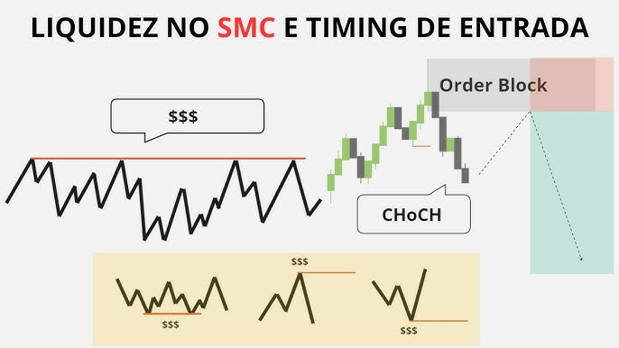

SMC (Smart Money Concepts)
Smart Money Concepts: refere-se a estratégias de trading que se baseiam na análise do comportamento dos grandes investidores (ou "smart money") no mercado. Aqui estão os principais pontos:
1. O que é o "Smart Money"?:
Refere-se a investidores institucionais e traders experientes que têm acesso a informações e análises avançadas,influenciando os movimentos do mercado.
2. Princípios:
- Identificação de Tendências: O SMC busca identificar onde o "smart money" está se movendo, analisando volumes e padrões de preço.
- Pontos de Liquidez: Foca em áreas onde grandes ordens de compra ou venda são esperadas, o que pode causar movimentos significativos nos preços.
3. Estratégias:
- Análise de Volume: Estudar como o volume de negociação muda em relação ao preço.
- Zonas de Oferta e Demanda: Identificar zonas onde a oferta e a demanda se encontram, ajudando a prever reversões ou continuação de tendências.
ICT (Inner Circle Trader)
Inner Circle Trader: é uma metodologia de trading desenvolvida por Michael J. Huddleston, que se concentra em estratégias de day trading e swing trading. Aqui estão os pontos-chave:
Educação e Metodologia: O ICT oferece uma abordagem educacional sobre como operar, focando em entender o comportamento do mercado.
Conceitos Principais:
- Estratégias de Entrada e Saída: Ensina como e quando entrar e sair de trades, baseando-se em análises técnicas e comportamentais.
- Modelos de Preço: Utiliza gráficos para identificar padrões que indicam oportunidades de trading.
- Gestão de Risco: Enfatiza a importância de gerenciar o risco e proteger o capital.
Ferramentas e Análise:
- Análise de Gráficos: Foco em gráficos de diferentes temporalidades (5 min, 15 min, 1h) para tomar decisões rápidas.
- Contexto de Mercado: Compreender o contexto econômico e notícias que podem afetar os preços.
Identifique onde está o dinheiro "LIQUIDEZ"
Dicas para Operar:
- Estude as Estratégias: Dedique tempo para entender tanto o SMC quanto a metodologia do ICT. Assista a vídeos, leia materiais e, se possível, participe de comunidades de traders.
- Pratique com Simuladores: Antes de operar com dinheiro real, utilize contas demo para testar suas estratégias sem riscos financeiros.
- Gerenciamento de Risco: Sempre use stop loss e defina a quantidade de capital que você está disposto a arriscar em cada trade.
- Mantenha-se Atualizado: Acompanhe as notícias e eventos econômicos que podem impactar os mercados. Informação é crucial no day trading.
- Análise Pós-Trading: Revise seus trades regularmente para entender o que funcionou e o que não funcionou, ajustando suas estratégias conforme necessário.
- Se você tiver mais perguntas ou precisar de detalhes específicos sobre algum aspecto, sinta-se à vontade para perguntar!

Afinal! Quem somos nós
Com mais de 6 anos de experiência, nossa equipe de especialistas traz as melhores estratégias em análise SMC e ICT para transformar seu conhecimento em oportunidades de trading